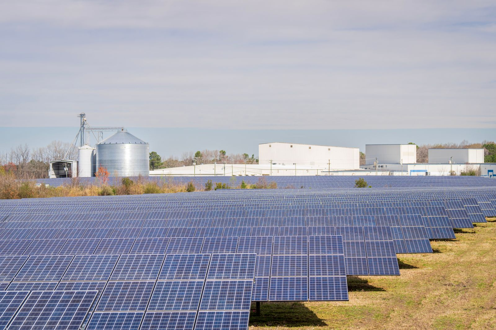

The farm sized on December, not on surplus
- Client
- Dairy farm, Wetherby
- System
- 24 kWp, east–west split
- Service
- Design & yield pack
- Status
- Generating since Mar 2025
The brief
A 180-cow dairy farm with two installer quotes on the table: 39 kWp and 44 kWp, both south-facing, both justified with annual generation figures and a summer surplus the farm had no use for. The farm's load tells a different story — the milking parlour, milk cooling and water heating draw a heavy, steady base load twice a day, every day of the year, and the binding month is December, when that load is unchanged and a south array is at its weakest.
The decisions
Twelve months of half-hourly meter data came first. The parlour's December base load metered at roughly 460 kWh for the month. The design was then worked backwards from that number: an east–west split across the parlour barn's two roof planes, which gives up about 17% of annual yield against south-facing but spreads generation across the morning and evening milking windows instead of piling it into a midday peak nobody needs. At 24 kWp, the modelled December output is about 480 kWh — the parlour's winter base load, covered by the worst month, with the summer surplus exported under the farm's existing connection agreement rather than designed around.
What was not sold
No battery. A battery shifts a day's surplus by hours; it does nothing about a winter month, and at farm scale the same money bought the export-limit check and a larger allowance for future parlour expansion. The reasoning is in the design pack, in writing.
